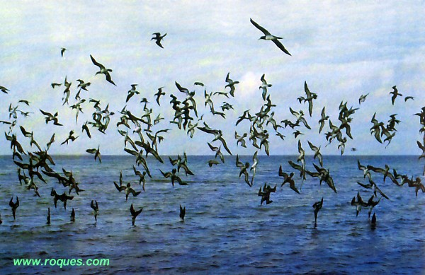

ENCUENTRO
ENCUENTRO
Graciela María Casartelli

Graciela María Casartelli |
 |
 |

|
 |
 |
Serie de fotografías a través de mi vida... La de
abajo es actual.

Graciela
María (Grace), nació el 3 de diciembre de 1946 en la ciudad
de Córdoba, Capital (Argentina). Es Licenciada en Psicología
y Magíster en Ciencias Sociales y su vida profesional la ha desempeñado
en los ámbitos estatal y privado, dedicándose fundamentalmente
a la Gerontología e Investigación Social. Cuenta con dos hijos y cuatro nietos. Su vida se ha visto marcada por cambios abruptos, con tantos logros como desilusiones, los que han impulsado una búsqueda espiritual madura, desafiando lo que ha considerado certero en las vueltas de su rumbo... Desde niña, tuvo afición por la música, el canto, la prosa poética y la llamada "poesía libre"; mientras que en los albores de su vejez ha optado por la pintura y la comunicación social; siendo la creadora de este Sitio Web. |
Una estrella del cielo brilla allá a lo lejos, a veces se esconde, no la veo, pero de vez en cuando, aparece dando luz a mi ventana, ¿será Graciela que viene a rondar mi sueño? Ángel Sanz Goena (España) |
|---|
Los hijos de mi alma...
Los hijos de mi alma: Uno a uno se fueron yendo...
Consigo se llevaron un pedazo de ella y de mi corazón.
Aunque ha pasado el tiempo, los sentimientos y las
nostalgias perviven,
donde cada cual está...
En su recuerdo, un latido y un sentir palpitan
y es lo que ha quedado de aquel corazón.
La finitud de la vida se acerca.
Deambulo entre vivos y muertos.
Fantasmas del día y de la noche que reclaman mi presencia.
Como el fruto queda vacío al desperdigar
sus semillas,
con honra entrega su cáscara a la tierra.
Si tanto amor entre mis brazos cupiera,
cómo un día juntarlos tal bengala al ser encendida...
Luego esparcirlos en los cielos semejante a lluvia de estrellas
y brincar y volar con ellos al horizonte,
para regresar con mil colores felices.
Ellos conmigo y yo con ellos...
Entonces volvería a estar íntegra, aunque por aquí no anduviera.
Se formaría nuevamente mi nombre, con cada
letra,
las que se fueron perdiendo entre tantas lágrimas.
Nos volveríamos a encontrar y partiríamos
tomados de la mano,
juntos y todos, hacia el infinito...
El regreso
Sobre ese paraje del camino,
en que de pronto, detengas tu paso y mires lo recorrido,
y en ese darse vuelta, cara a cara enfrentes el pasado,
te preguntes cómo llegaste allí, con quién, porqué...
Si tu ser entonces tan distante del comienzo, pudiera,
en un momento tomar conciencia de lo que dejaste;
volverás tal vez sobre el mismo camino,
curioso de tus ignorancias, de conocer qué fue verdad,
en el cúmulo disperso de recuerdos más o menos nítidos.
Te preguntarás dónde estuvo en aquel
tiempo y ese día,
mi cuerpo vivo...
La piel y el alma que se te desgranaban quietamente entre las manos...
Querrás levantarme entre tus brazos y verte en mis pupilas,
como entonces,
ansioso y espontáneo pudiste encontrarme...
Ávido de claridad, querrás saber en dónde estuvimos equivocados,
hallar a todo lo que fue nuestro una explicación.
Una presencia transparente,
algo especial que no se describe pero se presiente,
algo que en otro tiempo fue cercano,
guardaba vida y hablaba aún en el silencio,
estará cerca como hoy...pero sin mi persona.
Sentirás quizás el hondo vacío de aquello,
que se vive gozándolo,
como se discierne lo vano en palabras fáciles.
Te preguntarás para qué revolver cenizas...
Mejor, no vuelvas la cara...
Sigue en tu sendero de piedras blancas,
canturreando, entre tus libros
y tus pequeñas miserias...
Unquillo, Sierras de Córdoba, Argentina ,2006
Graciela María Casartelli
Reservados todos los derechos de autor.
(1) Agradezco la contribución de la amiga Ana Pereyra,quien enmarcó una de mis fotografías actuales, adjuntándole el nick o apodo, con el cual suelo identificarme entre amigos. E-mail: ana65_23@hotmail.com